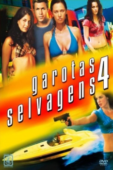

Garotas Selvagens 4 (2010)


Enjoy the ride.

Avaliação (TMDb):


5.2/10 (58 votos)
Avaliação (Usuário):
Outro Título:Wild Things: Foursome
País:United States, 92 minutos
Idiomas falados:Inglês
Gênero(s):Crime, Drama, Mistério
Diretor(s):Andy Hurst
Codec:MPEG-2 (DVD)
Número: 1542
Sinopse:
Herdeiro de um milionário dono de hotel assassinado, Carson Wheetly (Ashley Parker Angel) é seduzido por três mulheres e acaba preso num perigoso jogo de sedução. Ao ser acusado pelas mulheres de um crime que não cometeu, Carson percebe que foi enganado pelas três e tenta achar meios de escapar do plano feito por elas.
Elenco:
Jillian Murray, Ashley Parker Angel, Jessie Nickson, Rey Hernandez, Cameron Daddo, Mary Rachel Dudley
Tipo de mídia: DVD5,
Legendas: Português
Alugado: Não
Tela: 1.85:1